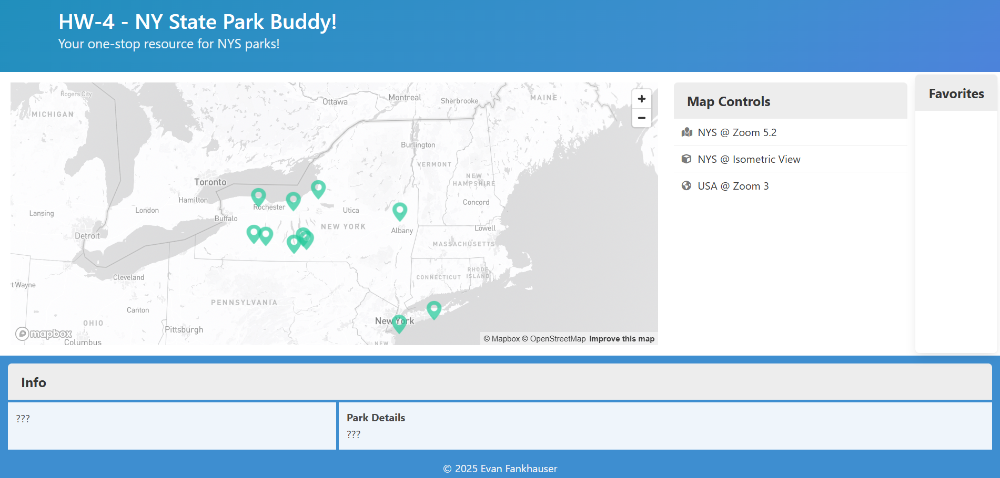
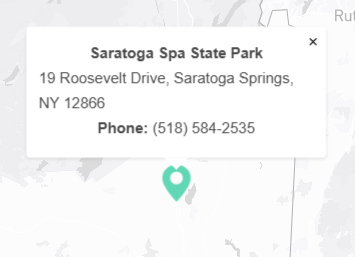
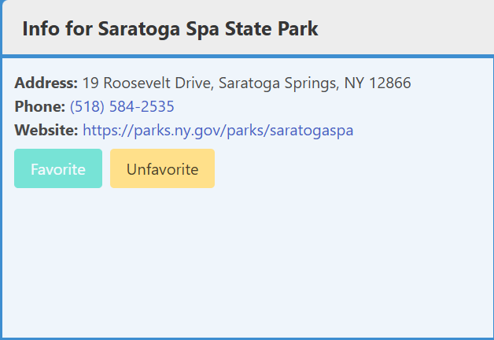
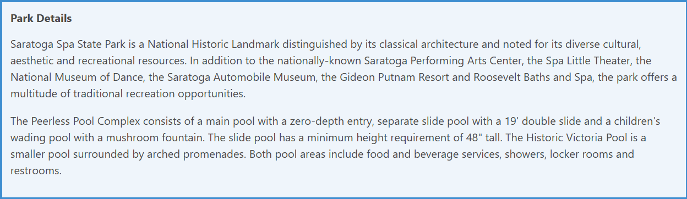
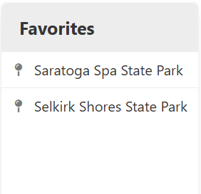

The New York State Park Buddy was my final project for a web development and JavaScript course.
The webpage is built with HTML and JavaScript, and the styling is a mix of CSS and Bulma.
The project uses the MapBox API to display New York state parks on a map, and FireBase to store popular favorite parks.
Users can click on map pins to see a description of each park, some information such as the address, and add or remove
the park from their list of favorites.
Each pin also prompts a pop-up with the park's name, address and phone number.
Each user's list of favorite parks are saved in local storage, and a database tracks how many favorite lists each park
is currently on.
The user's favorite parks are displayed on the right side of the screen, and clicking one has the same behavior as clicking
the park's pin on the map.

The pop-up when a pin is clicked.

The info panel for a favorited park.

The details panel for the selected park.

A display of favorited parks.